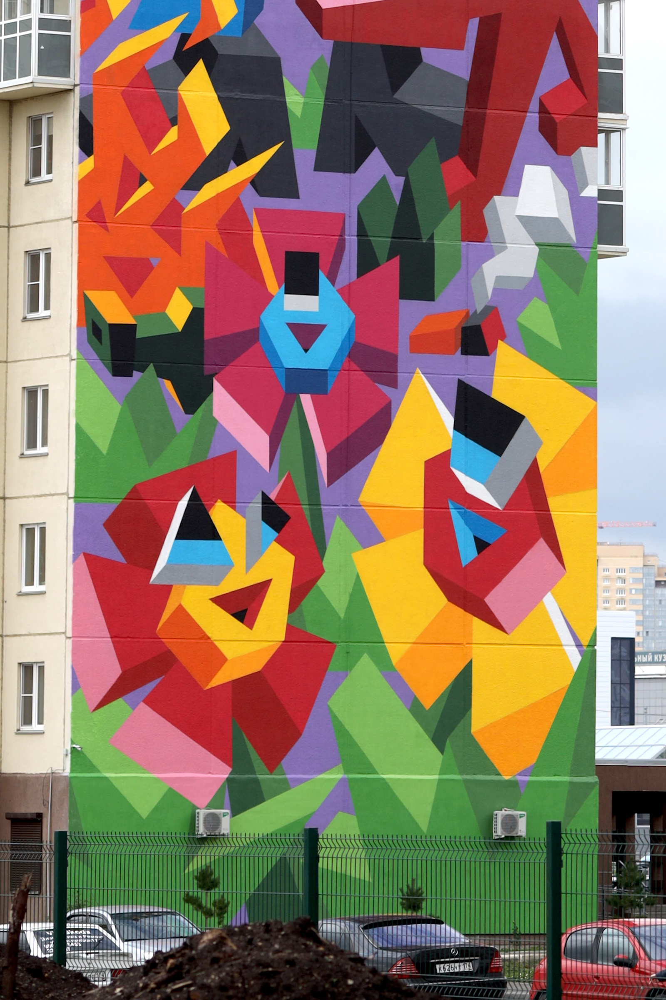
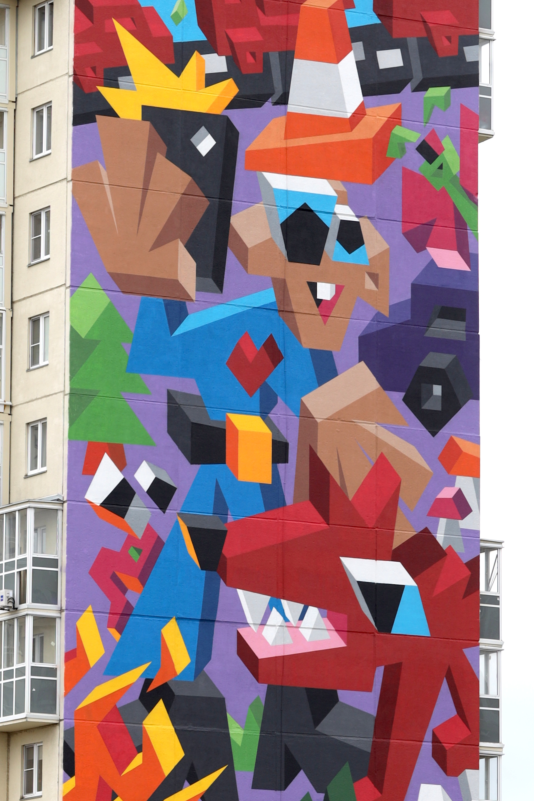
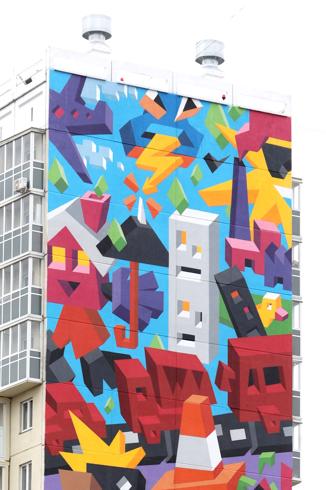

Murals
-
Love For Nature
-

- 
- 
- 
-
Spray paint on the 18-story building
Urban Morphogenesis Festival
Chelyabinsk, Russia
2020
-
Mystic Forest


-
Spray paint on the 9-story building
Urban Morphogenesis Festival
Solnechnodolsk, Russia
2021
-
Dreamland


-
Spray paint on the 12-story building
Urban Morphogenesis Festival
Balashikha, Russia
2022